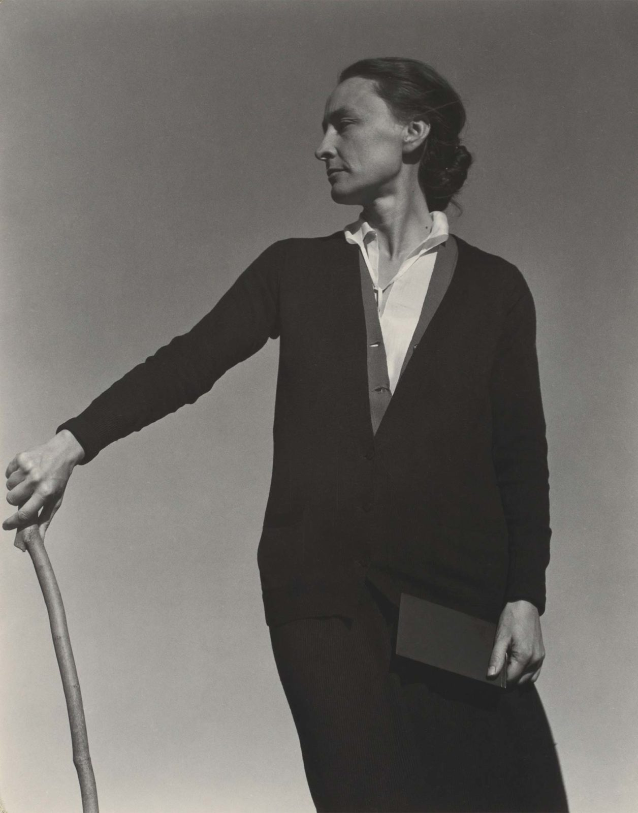

Contact Details
Address: 217 Johnson St, Santa Fe, NM 87501
Phone: (505) 946-1000
Email: georgia@okeef.fe
Work References
Pablo Picasso
Phone: (505) 946-1001
Email: pablo@geocities.net
Salvador Dali
Phone: (505) 213-5445
Email: therealdali@gmail.com